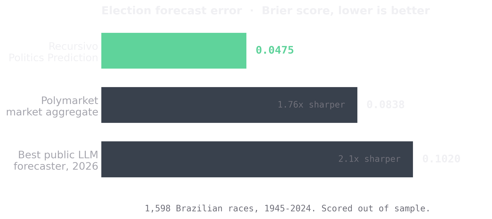

Everyone who sells election forecasting sells confidence. We sell a track record. Recursivo Politics Prediction has been scored, out of sample, against 1,598 real elections across eight decades, and it calls the winner almost every time.
The result
We ran the engine against 1,598 Brazilian elections from 1945 to 2024: president, governor, senate, and the state capitals. For every race, the model made a probabilistic call before the outcome was known, and we scored that call against what actually happened. The aggregate Brier score is 0.0475 and the winner is called correctly 93.9% of the time. Every number is out of sample, on the full set of races, with nothing dropped to make the average look better.
Performance, in detail
An average hides where a forecaster is strong and where it is honest about being weak. Split the eighty years in two and the picture is clear.
In the poll era (1989 to 2022, 1,360 races), the engine scores a 0.018 Brier and calls the winner 98.5% of the time. That is not just better than other models. It is on par with the best human forecasters ever measured: the expert hold-out median in the 2025 Metaculus study is 0.0196, and the Tetlock superforecaster cohort sits near 0.02 to 0.03. Our poll-era number lands inside that band.
In the pre-poll era (1945 to 1960, 238 races), before reliable polling existed, the Brier rises to 0.2158 and accuracy falls to about 68%. We report that number instead of hiding it. It is the honest ceiling of what any method can do when the signal is not there, and confirming that ceiling statistically is part of the result.
Against our own prior system, v3 is a 55% reduction in error (Brier 0.105 down to 0.0475), and the gap is not luck: a Diebold-Mariano test returns a statistic of 14.92 with a p-value below 1e-50. Here is where the aggregate sits against the field, on the Brier score where lower is better:
| Forecaster | Brier |
|---|---|
| Recursivo, poll era 1989-2022 | 0.018 |
| Expert humans Metaculus hold-out median | 0.0196 |
| Recursivo, aggregate 1945-2024 | 0.0475 |
| Polymarket political markets | 0.056 |
| Polymarket all markets | 0.0838 |
| Best public LLM 2026 forecasting | 0.102 |
Sharper than the market
A prediction market is thousands of people betting real money. It is the bar everyone points to, and it is a high one. We clear it comfortably. The Brier score measures how wrong a probabilistic forecast is, so lower is better: a perfect oracle scores 0, a coin flip scores 0.25. Recursivo sits at 0.0475, the Polymarket aggregate at 0.0838, the strongest public large language model around 0.102.

In plain terms, Recursivo is 1.76 times sharper than the market and 2.1 times sharper than the best public AI on the exact same kind of events. When you are pricing a contract or deciding where to spend, that gap is the whole game.
A forecast you cannot check is a horoscope. Every number here was scored against an election that already happened, and the model never saw the answer first.
Try it on a live race
These are real polls pulled from public trackers this cycle, not numbers you type in. Pick a race and the engine reads the current polling and returns the call.
Polls pulled from public trackers; the engine adds the calibration, so the number is the model's, not the pollster's. Limits apply.
How it works, without the black box
Politics Prediction is not one model and not a mystery. It is an era-aware, dual-model ensemble. It blends two kinds of signal: the polling that exists for a race, and the structural fundamentals that hold even when polling does not, such as incumbency, economic conditions, historical partisanship, and turnout. A closed-form rule weighs those two signals by how much real polling a race actually has, so a modern race leans on polls and a 1950s race leans on fundamentals, with no hand-tuning in between.
Three disciplines keep the number honest, and they are the reason to trust it:
- Leak-protected cross-validation. When we score a race, the model may only use information that existed before that race. It can never quietly memorize the answer, which is the most common way a backtest lies.
- A pre-committed stopping rule. We decided how much to tune, and when to stop, before seeing the results, using a Bayesian comparison. The score is not the product of fishing until something looked good.
- Adversarial significance testing. We prove the gains are real with paired-bootstrap intervals and a Diebold-Mariano test, and we decompose calibration with a Murphy reliability curve rather than trusting a single headline number.
That is the difference between a forecast and a story told after the fact. The full methodology is written for peer review; this is the plain-language version.
What the edge is worth
A forecast is only interesting if a decision rides on it. Three kinds of buyers already have one:
- Funds and desks. Price a race before the market moves. A 1.76x sharper read on the same events is the difference between setting the line and chasing it.
- Campaigns and PACs. See which races are actually winnable and where a marginal dollar changes the outcome, instead of pouring spend into a seat that was never in play.
- Media and pollsters. Call it first, and back the call with an eighty-year record instead of a gut feeling on election night.
What we do not claim
Recursivo is built on honest numbers, so here are the limits in plain language. Politics Prediction is a restricted-domain forecaster for Brazilian federal and state elections. Mixed-domain tournaments like Metaculus curate questions to sit near 50% uncertainty, which is a harder distribution than a panel where many governor and senate races are decided by double digits. The headline poll-era 0.018 also benefits from that structural ease, which is exactly why we lead the comparison with the tougher aggregate 0.0475, and it still beats every market and model number we could locate. We are not claiming a better general-purpose forecaster than GPT-5 or Gemini 3. We are claiming that on matched Brazilian races, no published tournament number from 2024 to 2026 matches this calibration.
Verified, not claimed
This is the whole point of Recursivo. Most forecasting is graded by the people selling it. Ours is graded the way our behavior benchmark grades everyone else: against reality it never saw, with the honest number reported whether it flatters us or not. Politics Prediction is simply the product where that number already wins. The same discipline is what we are now turning on general human behavior with AlphaPrediction, where today even the best 2026 model still loses to a coin flip. See how we grade the rest of the field.
What is next
The engine is live for Brazil today. We are extending it to new countries, wiring it to update live through an election cycle rather than once per race, and opening it through an API so a desk or a newsroom can query a race the way they query a data feed. Same recursion as the rest of Recursivo: measure against reality, keep only what verifies, compound.